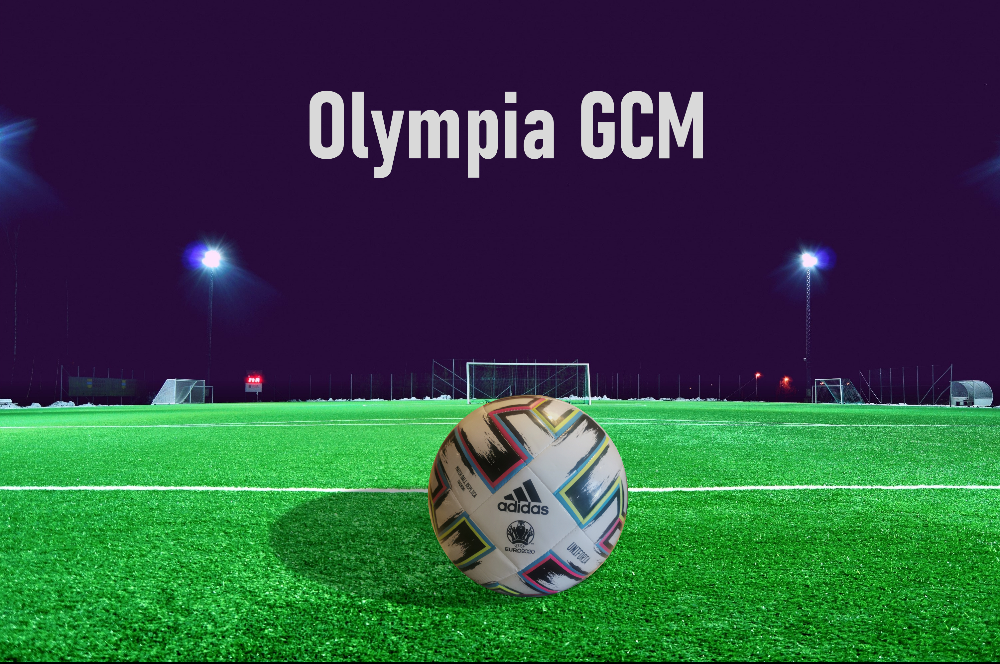
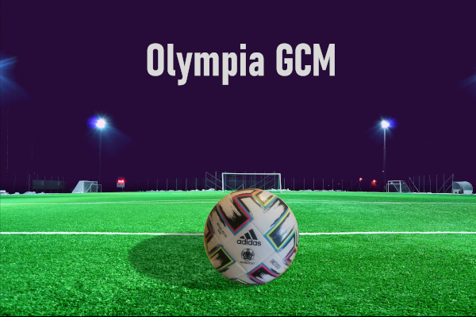

IMAGEN
Sección donde aparecen las imágenes solicitadas.
Composición

Imagen Responsiva
SONIDO
Sección donde aparece el audio utilizado como música de fondo en el vídeo
El audio No Rest Or Endless Rest.mp3 alojado originalmente en esta dirección está libre de derechos.
Tamaño: 1,495 MB
VÍDEO
Sección donde aparece el video con distintos efectos
El video 02_video.webm alojado originalmente en esta dirección, está libre de derechos.
Tamaño original: 16,147 MB | Tamaño comprimido: 12.970 MB